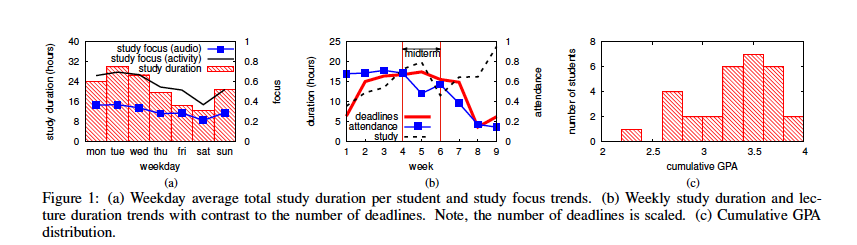
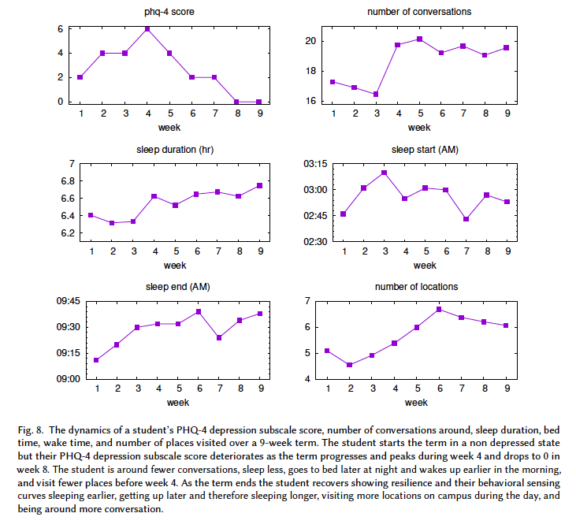
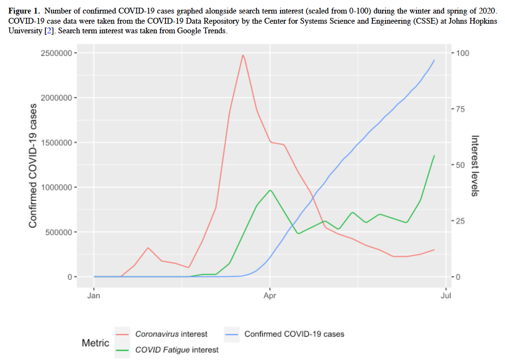
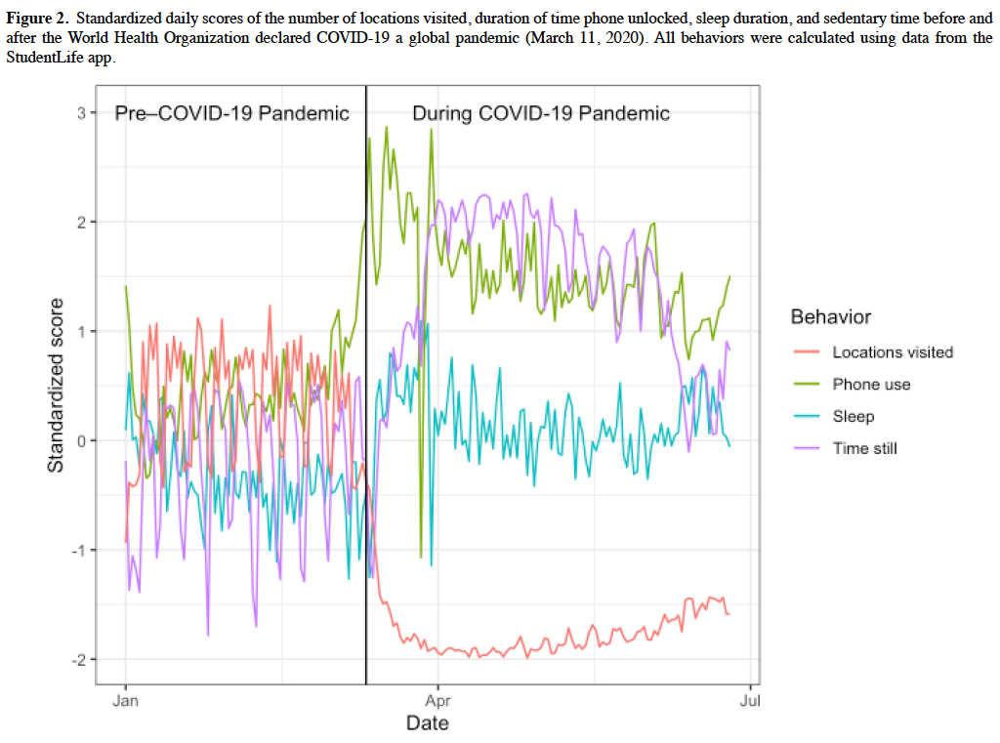
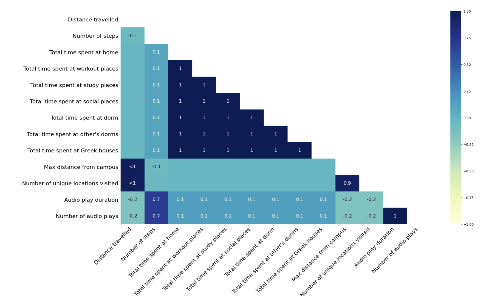
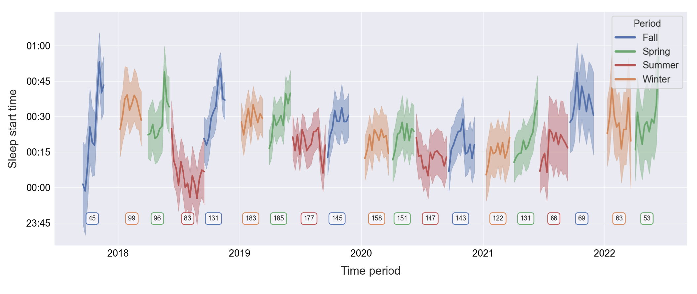
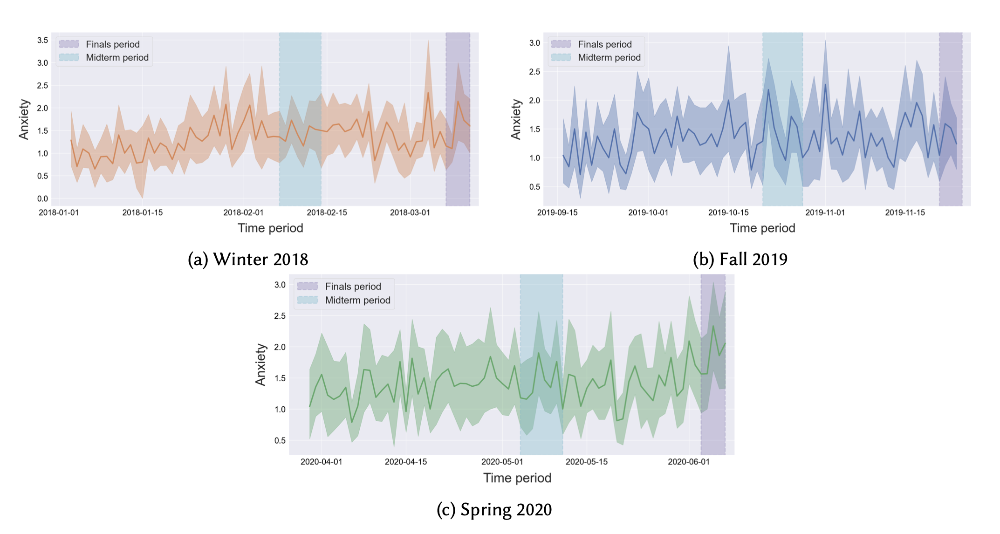
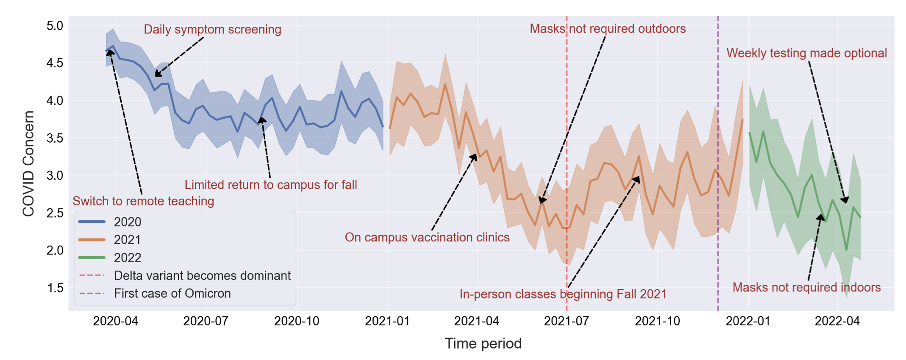

ch3.디자인 리서치를 위한 탐구적 데이터 분석 사례 (2): StudentLife 데이터 분석 사례
StudentLife 데이터 분석 사례 개요
StudentLife 연구는 2013년부터 2022년까지 다트머스 대학에서 스마트폰과 웨어러블 기기를 활용하여 학생들의 정신 건강과 행동 데이터를 분석한 장기 프로젝트입니다. 연구팀은 참여 학생들에게 스마트폰 앱을 설치하고, 스마트폰 센서를 활용하여 일상 활동, 위치, 수면 패턴, 통화 기록, 문자 메시지 등을 자동으로 수집하였고, 정기 설문 조사를 실시하였습니다. 이 데이터를 통해 학생들의 스트레스, 우울증, 불안 등의 정신 건강 상태를 평가하고, 학생 활동과 학업 성취도와의 관계를 분석했습니다. 이 연구는 장기간 수집된 데이터를 통해 학생들의 행동 변화와 정신 건강 상태를 심층적으로 연구하며, 이를 바탕으로 학생 지원 방안을 모색하였고, 스마트폰 센서 데이터를 분석하는 방법과 사례에 대한 다수의 논문을 발표하였고, 연구에서 수집한 데이터를 Kaggle 사이트에 공개하였습니다. (10)(11)
프로젝트 기간 변 주요 연구 내용은 다음과 같습니다.
- 2013년: 48명의 학생을 대상으로 10주 동안 스마트폰 센서를 통해 스트레스, 외로움, 수면 패턴 등을 분석하고, 학업 성취도(GPA)와 정신 건강의 관계를 연구.
- 2016년: 83명의 학생을 대상으로 두 학기 동안 스마트폰과 웨어러블 기기를 이용해 우울증과 불안의 상태를 조사.
- 2018년~2022년: 200명의 학생을 대상으로 COVID-19 팬데믹 기간 포함하여 4년 동안 장기 연구를 수행하고 학생들의 정신 건강과 행동 변화 분석.
College Experience Study Dataset
다음의 데이터 시각화 사례들은 본 연구에서 발표한 논문들에서 발췌한 그래프들로 여러 유형의 시각화 그래프와 그래프 해석 사례를 보여주고 있습니다. 이와같이 이미 데이터의 시각화된 분석 자료가 있는 경우, 그래프 해석을 통하여 디자인에 필요한 인사이트를 도출할 수 있습니다. 21년도에 진행한 수업에서는 아래의 그래프들을 해석하여 대학생의 행동 패턴들을 발견하고, 긍정적인 행동 패턴으로의 변화를 유도할 수 있는 모바일 서비스의 디자인 제안을 수업 프로젝트로 진행하였습니다.
다양한 유형의 데이터 시각화 그래프 해석 연습이라고 생각하고 아래에 제시한 사례 그래프들을 읽고 의미를 해석해 봅시다.
1) 실험 참여 대학생의 학기중 생활 패턴 분석

이 그래프들은 주간 요일 및 학기중 주차 별 학생들의 학업 관련 활동과 학점(GPA)을 시각화한 것입니다. 학업 활동의 변동과 학생들의 성취도를 파악함으로써, 보다 효과적인 학습 전략과 지원 프로그램을 개발하는데에 도움을 줄 수 있습니다.
그래프 (a): 주중 평균 총 공부 시간 및 공부 집중도 추세
X축의 요일 별로 Y축의 공부 시간 (그래프 왼쪽 축, 시간) 및 집중도 (그래프 오른쪽 축, 0~1 사이의 값)를 빨간색 막대그래프: 각 요일의 공부 시간 (study duration), 파란색 꺾은선 그래프: 오디오 데이터를 통한 공부 집중도 (study focus (audio)), 검정색 꺽은선 그래프: 활동 데이터를 통한 공부 집중도 (study focus (activity))로 표현했습니다. 월요일부터 금요일에는 공부 시간과 집중도가 모두 높습니다. 특히 주 초반에는 공부 시간이 최대치에 도달합니다. 주말에는 공부 시간이 급격히 감소합니다. 특히 토요일에 가장 낮은 공부 시간을 보이며, 일요일에는 약간 증가함을 알 수 있습니다.
그래프 (b): 학기 주차 별 공부 시간 및 강의 출석 시간과 과제 마감 갯수 추세
X축의 주차 별로(1~9주차까지) Y축의 공부 시간 (그래프 왼쪽 축, 시간) 및 과제 마감 갯수 (그래프 오른쪽 축, 0~1의 상대 값)를 파란색 꺾은선 그래프: 주간 출석 시간, 빨간색 꺾은선 그래프: 주간 공부 시간, 검은색 점선 그래프: 마감 갯수로 표현했습니다. 초기 주차 (1~3주차)는 공부 시간과 출석 시간이 비교적 안정적으로 유지됩니다. 마감일 수는 적습니다. 중간고사 기간은(4~6주차) 공부 시간이 급격히 증가하며, 출석 시간도 증가합니다. 마감일 수도 증가하여 학생들이 중간고사 준비에 몰두하는 것을 알 수 있습니다. 후기 주차 (7~9주차)는 공부 시간과 출석 시간이 급격히 감소합니다. 마감일 수도 감소하여 학생들이 학기 말에 학업 활동이 줄어드는 경향을 보입니다.
그래프 (c): 누적 GPA (모든 수강 과목의 학점 평균) 분포
X축은 학점(GPA), Y축은 학생 수를 표현합니다. 대부분의 학생들이 3.0에서 3.5 사이의 GPA를 가지고 있습니다. 이는 평균 이상의 학업 성취도를 나타냅니다. 2.5 이하의 GPA를 가진 학생은 비교적 적습니다. 이는 실험에 참여한 학생들의 전반적인 학업 성취도가 높음을 나타냅니다.

이 그래프들은 한 학생의 우울증 수준이 학기 중 특정 시기에 어떻게 변동하는지, 그리고 그에 따라 행동 패턴이 어떻게 변화하는지를 잘 보여줍니다. 이는 학생들의 정신 건강을 모니터링하고, 적절한 시기에 지원을 제공하는 데 중요한 정보를 제공할 수 있습니다. 사례 학생은 PHQ-4 점수가 초기 2주 동안 상승하여 4주차에 최고점을 기록한 후 급격히 감소하여 9주차에는 0이 됩니다. 대화 횟수는 4주에서 대화 횟수가 급격히 증가한 후 안정적으로 유지됩니다. 학기 초기 우울증 악화와 함께 사회적 상호작용이 증가합니다. 학기초 우울증 악화 기간 동안 수면 시간이 감소하다가 이후 안정됩니다. 방문 장소 수는 우울증 악화 기간 동안 적은 수의 장소를 방문하지만 회복되면서 방문 장소 수가 증가하는 패턴을 볼 수 있습니다 .
2) 코로나 기간 동안의 학생 생활 패턴 변화 분석

위 그래프는 존스 홉킨스대에서 수집한 2020년 겨울과 봄 동안 확진된 코로나19 사례 수와 관련된 구글 검색어 관심도를 시각화한 것으로, 팬데믹 초기와 중기 동안 사람들의 정보 검색 행동과 실제 확진자 수의 변화를 잘 보여줍니다. 초기에는 바이러스에 대한 정보 검색이 활발했지만, 시간이 지나면서 코로나 증상에 대한 피로감이 증가했습니다.X축은 시간 (2020년 1월부터 7월까지), Y축의 왼쪽은 확진된 COVID-19 사례 수, Y축의 오른쪽은 관심도 수준을 (0에서 100까지, Google 트렌드 데이터) 나타내고, 파란색 선은 확진된 COVID-19 사례 수, 빨간색 선은 ‘Coronavirus’ 검색어 관심도, 녹색 선은 ‘COVID Fatigue’ 검색어 관심도를 나타냅니다. 확진된 COVID-19 사례 수는(파란색 선) 4월에 급격히 증가하기 시작하여 7월 초에 최고점을 기록합니다. ‘Coronavirus’ 검색어 관심도는(빨간색 선) 3월 중순에 최고점에 도달하고, 5월~6월 이후 관심도가 급격히 감소하여 낮은 수준으로 유지됩니다. ‘COVID Fatigue’ 검색어 관심도는 (녹색 선) 3월~4월에 관심도가 증가하여 4월 초에 첫 번째 피크에 도달합니다. 이후 관심도가 약간 감소했다가 6월 중순부터 다시 증가합니다.
4월 이후, 확진 사례 수가 계속 증가하는 반면, ’Coronavirus’에 대한 관심도는 감소하는 것은 사람들이 바이러스 자체에 대한 정보보다는 다른 주제에 더 관심을 가지기 시작했음을 시사합니다. 6월 이후 ’COVID Fatigue’에 대한 관심도가 다시 증가하는 것은 팬데믹이 장기화되면서 피로감이 더욱 심화되었음을 보여줍니다.
해당 데이터는 공중 보건 메시지 전달과 같은 커뮤니케이션 전략을 수립하는 데 중요한 인사이트를 제공하며, 팬데믹 동안 사람들의 정보 필요와 감정적 반응을 이해함으로써 더 나은 대응 전략을 마련할 수 있습니다.

위 그래프는 COVID-19 팬데믹 이전과 이후의 학생들의 일상 행동 변화를 시각화한 것입니다. 여기에는 방문한 장소 수, 핸드폰 사용 시간, 수면 시간, 움직임이 없던 시간이 표준화 지표로 표현되어 있습니다. 팬데믹 선언 후 방문한 장소 수가 급격히 감소하고, 핸드폰 사용 시간과 정지 상태의 시간이 급격히 증가합니다. 또한 수면 시간도 팬데믹 이전보다 증가하는 경향을 보입니다. WHO가 COVID-19 팬데믹을 선언한 날짜 (2020년 3월 11일)전에는 모든 행동 지표가 변동성이 큽니다. 팬데믹 선언 직후 모든 행동 지표에 급격한 변화가 관찰됩니다. 팬데믹 동안(Dur방문한 장소 수는 낮은 수준을 유지하지만, 점차 증가하는 경향이 있습니다. 핸드폰 사용 시간은 팬데믹 선언 직후 급격히 증가합니다. 이는 학생들이 집에 머무르면서 온라인 활동과 소셜 미디어 사용이 증가했음을 시사합니다. 수면 시간과 정지 상태 시간은 변동이 있지만 팬데믹 이전보다 높은 수준을 유지합니다.

위 그래프(Coefficient plot)은 코로나 바이러스, 코로나 피로의 관심도와 학생 활동의 영향에 대한 회귀 분석 결과를 시각화한 그래프입니다. X축의 계수 값(Coefficient Value)이 클수록 해당 변수의 영향력이 크고, 계수 값이 양수면 해당 변수가 종속 변수에 정(+)의 영향을, 음수면 부(-)의 영향을 미칩니다. 이 플롯을 통해 어떤 변수가 중요한지, 그리고 그 영향력이 어떻게 되는지를 직관적으로 파악할 수 있습니다.
위 그래프에서 코로나 바이러스, 코로나 피로의 관심도는 스마트폰 사용 시간, 정적 활동의 증가와 관련이 있으며, 이동 거리와 방문 장소 수의 감소와 관련이 있습니다. 또한 우울과 걱정도 코로나 관심도가 양의 영향을 미칩니다.
3) 코로나 기간 전후의 학생 생활 및 정신 건강 상태에 대한 데이터 분석
이 연구는 대학생들의 정신 건강 변화를 코로나 기간을 포함하여 추적한 연구로서, 연구진은 모바일 센싱 소프트웨어를 사용하여 4년 동안 200명 이상의 대학생들의 실시간 활동 데이터를 수집했습니다.

Nullity Correlation은 데이터 분석에서 결측값(Missing Values) 간의 상관관계를 나타내는 용어입니다. 특정 변수의 결측값 존재 여부와 다른 변수의 결측값 존재 여부 사이의 관계를 측정합니다. 예를 들어, 두 변수 모두 결측값이 있는 경우, 이 변수들은 높은 Nullity Correlation 값을 가질 것입니다. 이는 한 변수의 데이터가 결측되면 다른 변수도 결측될 가능성이 높다는 것을 의미합니다.
그림 6.7에서, 대부분의 위치 관련 특성들은 1의 값을 가지는데, 이는 하나의 위치 특성이 나타나면 다른 위치 특성도 거의 항상 나타난다는 것을 의미합니다. 위치 특성은 GPS 데이터의 가용성에 따라 달라지기 때문에, GPS 데이터가 있을 때는 위치 특성들이 모두 존재하거나, 없을 때는 모두 존재하지 않는 것이 논리적입니다. 1.0 상관관계에 대한 예시로 ****“Total time spent at social places”와 “Total time spent at other’s dorms” (사회적 장소에서 보낸 시간과 다른 기숙사에서 보낸 시간)을 보면 두 장소의 데이터는 동시에 측정되었습니다. 그리고 “Number of audio plays”와 “Audio play duration” (오디오 재생 횟수와 오디오 재생 시간)의 0.7 상관관계는 두 기능이 자주 함께 나타남을 의미합니다. 오디오를 재생할수록 재생 시간도 증가하기 때문에 논리적인 결과입니다. 반면에 “Audio play duration”과 “Total time spent at study places” (오디오 재생 시간과 공부 장소에서 보낸 시간)간의 음의 상관관계는 상관관계가 없다고 볼 수 있습니다. 예를 들어, 운동이나 공부를 할 때 오디오를 재생하는 시간이 감소할 수 있습니다.

해당 그래프는 2018년부터 2022년까지 학기와 연도에 따른 학생들의 수면 시작 시간의 변화를 보여줍니다. 여름 학기 동안 학생들이 더 일찍 잠드는 경향이 있으며, 학기 말로 갈수록 수면 시간이 늦어지는 패턴이 관찰됩니다. 그리고 가을 학기(파랑)와 겨울 학기(주황)는 비교적 수면 시작 시간이 일정하게 유지되지만, 봄 학기(초록)와 여름 학기(빨강)는 더 큰 변동성을 보입니다. 각 학기의 참여자 수는 그래프 하단의 사각형에 표시되어 있습니다. 예를 들어, 2018년 가을 학기에는 45명이 데이터를 제공한 반면, 2021년 봄 학기에는 122명이 데이터를 제공하였습니다. 학기마다 다른 참여자수는 데이터의 신뢰성에 영향을 미칠 수 있습니다.이러한 정보를 통하여 학생들의 수면 습관을 이해하고, 건강한 수면 습관을 촉진하기 위한 캠퍼스 정책을 개발할 수 있습니다.

이 그래프는 학생들이 중요한 학업 기간 동안 불안을 더 많이 느낀다는 것을 시각적으로 보여줍니다. 특히 중간고사와 기말고사 기간 동안 불안 점수가 상승하는 경향이 명확하게 나타납니다. 2018년 겨울 학기와 2020년 봄 학기는 불안 점수의 변동 폭이 크지만, 2019년 가을 학기는 비교적 안정적인 차이가 있어 학기별로 불안 지수가 다른 특징이 있습니다. 이러한 정보는 학생들의 학업 스트레스를 줄이고, 정신 건강을 지원하기 위한 정책을 개발하는 데 중요한 데이터로 활용될 수 있습니다.

이 그래프는 코로나 팬데믹 기간 동안 주요 코로나 이벤트에 따른 COVID-19에 대한 학생들의 걱정 정도를 보여줍니다. 중요한 캠퍼스 이벤트 및 조치들이 학생들의 걱정 수준에 큰 영향을 미쳤음을 알 수 있습니다. 이러한 데이터는 팬데믹 대응 및 학생 지원 전략을 수립하는 데 인사이트를 제공할 수 있습니다.
주요 이벤트와 걱정 지수의 변화:
- 원격 수업 전환 (2020년 4월): 걱정 수준이 상당히 낮아지는 효과가 있습니다.
- 일일 증상 검사 도입 (2020년 5월): 초기 팬데믹 대응 조치로, 걱정 수준이 높지만 점차 감소합니다.
- 캠퍼스 복귀 제한적 허용 (2020년 10월): 걱정 수준이 다시 약간 상승합니다.
- 백신 클리닉 도입 (2021년 4월): 걱정 수준이 크게 감소하는 주요 요인입니다.
- 마스크 착용 완화 (2021년 6월, 2022년 4월): 걱정 수준이 감소하는 경향을 보입니다.
- 델타 변이 및 오미크론 변이 출현 (2021년 7월, 2022년 1월): 새로운 변이의 출현으로 걱정 수준이 다시 증가합니다.
이상의 데이터 분석 사례와 같이 여러분의 실습 주제와 관련한 데이터 분석 보고서나 논문을 찾아보고, 제시된 데이터의 분석 표나 그래프를 해석하여 디자인 주제에 대한 인사이트를 발견해보세요.
(문헌 10) Dartmouth College, “StudentLife Study”, (2024.7.24), https://studentlife.cs.dartmouth.edu
(문헌 11) Kaggle, “College Experience Study Dataset”, (2024.7.31) https://www.kaggle.com/datasets/subigyanepal/college-experience-dataset?resource=download
(문헌 12) Rui Wang, et al., ”SmartGPA: How Smartphones Can Assess and PredictAcademic Performance of College Students”, UbiComp ’15, September 07-11, 2015, Osaka, Japan
(문헌 13) R. Wang et. al., “Tracking Depression Dynamics in College Students Using MobilePhone and Wearable Sensing”, Proceedings of the ACM on Interactive, Mobile, Wearable and Ubiquitous Technologies, Vol. 2, No. 1, Article 43. (2018).
(문헌 14) D. L Mack, et al., “Mental Health and Behavior of College Students During theCOVID-19 Pandemic: Longitudinal Mobile Smartphone andEcological Momentary Assessment Study, Part II”, JOURNAL OF MEDICAL INTERNET RESEARCH, vol. 23, iss. 6, e28892 (2021)
(문헌 15) Subigya Nepal, et al. “Capturing the College Experience: A Four-Year Mobile Sensing Study of Mental Health, Resilience and Behavior of College Students during the Pandemic.” Proceedings of the ACM on Interactive, Mobile, Wearable and Ubiquitous Technologies. (2024)